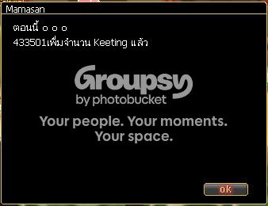

หน้า 25 จากทั้งหมด 100

โพสต์แล้ว:
ศุกร์ 06 มิ.ย. 2008 12:17 pmโดย ECO
สรุป 3 วันที่ตั้งโกเล็มมาหลังจากเปิดเซิร์ฟใหม่ เก็บส่วนตัวกับเพื่อนในริง ขึ้นหลักพันแล้วครับ รอดูกันต่อไปว่าปิดเซิร์ฟคราวหน้า จะได้เท่าไหร่...
(ได้แสตมป์หนอนแดงมา 5 ดวงเอาไล่ปาหัวเพื่อนในริงแล้ว เพื่อนอีกคนหนอนม่วง 5 ดวงเหมือนกัน ไม่ยักจะเอามาปามั่ง :lol: )
เดี๋ยววันนี้จะเอาที่คุณเอกมาฝากไว้ไปส่งก่อนละกันน่อ...

โยนไป5,134อันเห็นจะได้ ถ้าจำเลขไม่ผิด- -...
โพสต์แล้ว:
ศุกร์ 06 มิ.ย. 2008 10:00 pmโดย ECO
ข้าพเจ้ามีอยู่1พันอัน = =" จะเอาไปโยนก็ยังไม่ได้ไป
ว่าแต่ ตกลงตอนนี้มีตั้งรับที่แมพไหนมั่งอ่านี่ เอาไปตั้งมั่งดีมั้ยน้อ
โพสต์แล้ว:
ศุกร์ 06 มิ.ย. 2008 10:32 pmโดย ECO
kittiya เขียน:เอ่อ คาดว่าตาเอกจาซื่อมากกว่า - -"
ปล. เมลแกยาวชิบ
ซื้อไว้จับชาย
โพสต์แล้ว:
ศุกร์ 06 มิ.ย. 2008 11:00 pmโดย ECO
ยังไม่ได้ตั้งแบบตั้งรับเลยน่ะ ตอนนี้เล่นตีส่วนตัวกับเพื่อนในริงที่แมปบอสไก่ ได้มาเกือบ2พันแล้วครับ...
ถ้าจะมีใครไปตั้งรับราคาที่นั่นก็คงดี(มั้ง) คนมาตีทิ้งเกลื่อนเลย ทั้งแบบปกติทั้งแบบไอเท็ม*2...
โพสต์แล้ว:
ศุกร์ 06 มิ.ย. 2008 11:24 pmโดย ECO
ได้กลับบ้านอาทิตละวัน ปั้นตัวใหม่กะแฟนมาตีเกบคีตินโยนเล่นอิอิ
โพสต์แล้ว:
ศุกร์ 06 มิ.ย. 2008 11:27 pmโดย ECO
มีอีกปัญหา - -" รับได้เยอะแล้วจะแบกกลับเมืองยังไง...
โพสต์แล้ว:
เสาร์ 07 มิ.ย. 2008 5:01 amโดย ECO
kittiya เขียน:มีอีกปัญหา - -" รับได้เยอะแล้วจะแบกกลับเมืองยังไง...
-แจวาปกลับ
-แม่ค้าโยนไปฟาอีส
-ตัวที่ฟาอีสถอนคีตินออกมาส่งป้า
โพสต์แล้ว:
เสาร์ 07 มิ.ย. 2008 12:59 pmโดย ECO
=v= ขอบคุณสำหรับตัวช่วยค่ะ ไปตั้งรับวันไหนดีน้อ วันอังคารนี้มันปิดเซิฟมั้ยอ่ะ? แล้วตอนนี้ตั้งรับกันที่ราคาเท่าไหร่หรอคะ?
โพสต์แล้ว:
เสาร์ 07 มิ.ย. 2008 5:57 pmโดย ECO
เย้ๆ โมจิ
41000(ประมาณ)
แล้ว

โพสต์แล้ว:
อาทิตย์ 08 มิ.ย. 2008 1:21 amโดย ECO
kittiya เขียน:=v= ขอบคุณสำหรับตัวช่วยค่ะ ไปตั้งรับวันไหนดีน้อ วันอังคารนี้มันปิดเซิฟมั้ยอ่ะ? แล้วตอนนี้ตั้งรับกันที่ราคาเท่าไหร่หรอคะ?
ตัวที่ไปตั้งใช่ที่ชื่อยูโกะป่าว พอดีออกไปกินข้าวเย็นกลับมา3ทุ่มเห็นมาตั้งอยู่ มีคนหยอดไปแค่40กว่าเอง นอกนั้นเขาวางกองทิ้งไว้- -"...
ที่เก็บเองตอนนี้ถึง3พันแล้ว เหลืออีก3วันสรุปผลครับ...
โพสต์แล้ว:
อาทิตย์ 08 มิ.ย. 2008 1:21 pmโดย ECO
ถูกแล้วค่ะ =w= ตั้งมาเพื่อการนี้โดยเฉพาะ แต่ว่า ไอ้ที่มีคนโยนน่ะ ตัวหนูเองนะ - -" ทำไม๊ทำไมคนมันร้างงี้ก็ไม่รู้ ว่าจะเปลี่ยนไปตั้งที่Lakeแล้วง่ะ ตรงนั้นยังพอมีคนมาเวลอยู่
โพสต์แล้ว:
อาทิตย์ 08 มิ.ย. 2008 2:14 pmโดย ECO
คนมากันเยอะนะ แต่เขาไม่หยอดกันอ่ะ- -"...
โพสต์แล้ว:
อาทิตย์ 08 มิ.ย. 2008 4:08 pmโดย ECO
Keetin นีจำได้ เค้าเอาไปทำอาหารได้ด้วยนี่ ใช่มิ
โพสต์แล้ว:
อาทิตย์ 08 มิ.ย. 2008 4:21 pmโดย ECO
ใช่งับ :oops:
เอาไปทำ Pet Foods ก็ได้ :oops:
โพสต์แล้ว:
อาทิตย์ 08 มิ.ย. 2008 5:05 pmโดย ECO
ตะกี้เมาๆ ไม่รู้หยอดโกเล็มผิดตัวหรือเปล่า แต่ก็โยนอย่างอื่นไปด้วยมั้งถ้าหยอดจริง- -...